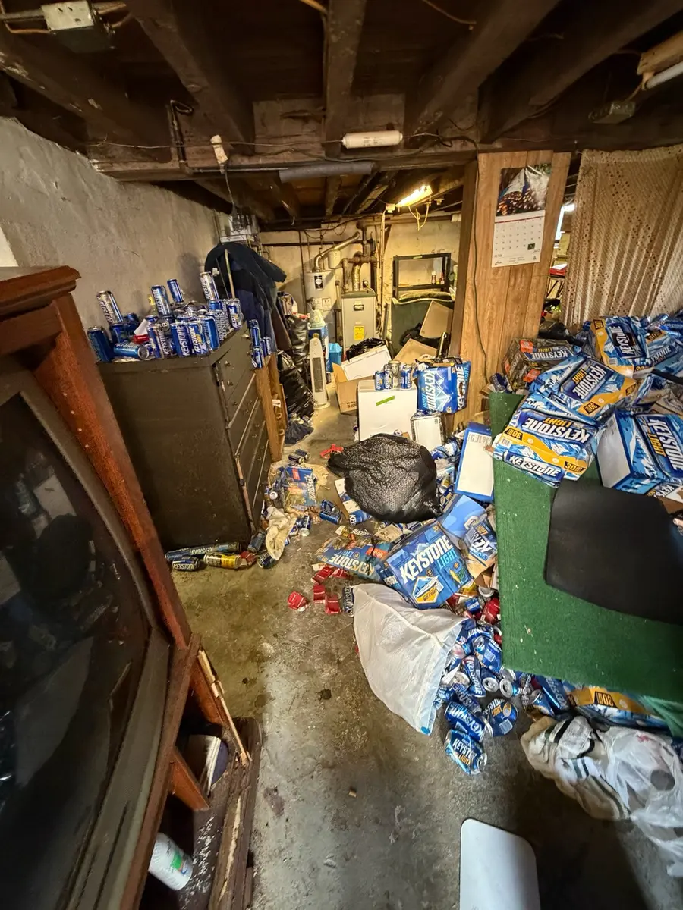
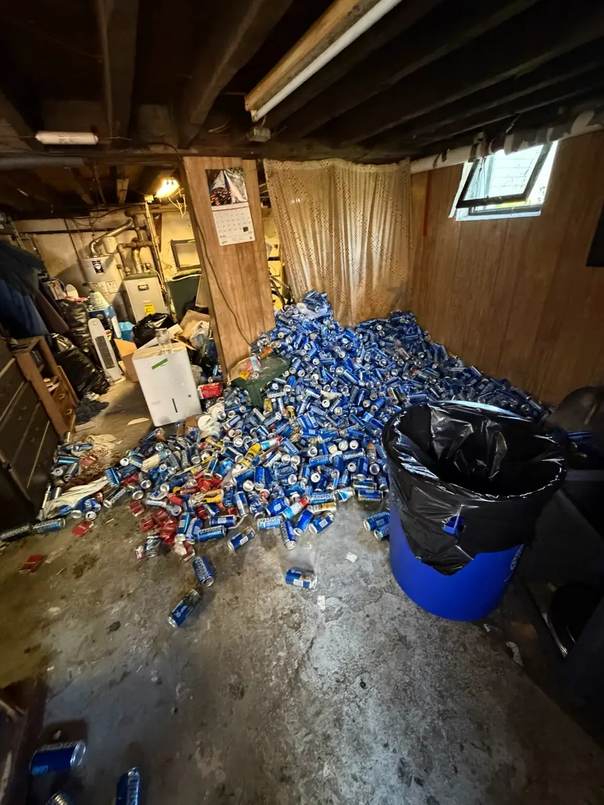
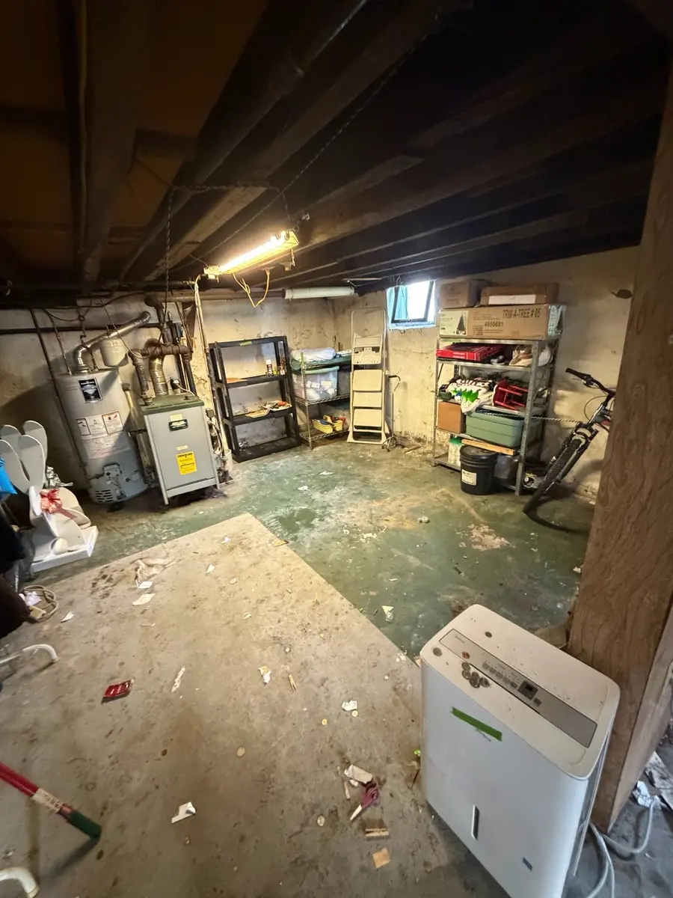
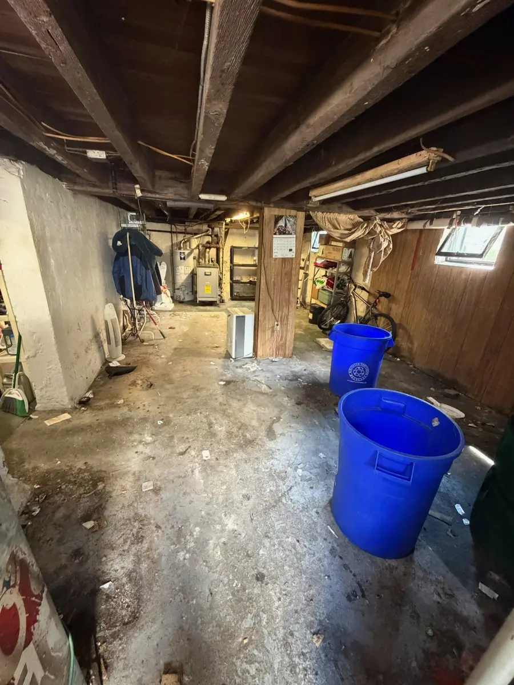

Can-filled basement cleanoutFrom a crowded basement to a clear, usable space.
1 / 4
FULL-SERVICE JUNK REMOVAL
From one bulky item to a full home cleanout, we do the lifting, loading, hauling and cleanup—so you can reclaim your space without renting a dumpster or hurting your back.
WHAT WE REMOVE
We remove unwanted items from homes, rentals, businesses, garages, basements, yards and more.
INTERACTIVE PRICING
Select the closest size for an instant starting price. Trailer-load pricing is scaled directly from a $900 full load.
ESTIMATED STARTING PRICE
About 10 cubic yards · up to 1 ton
Starting prices: Final pricing is confirmed before loading and may change for excess weight, extra labor, difficult access, specialty items or disposal fees. Single-item pricing applies to a standard item with easy access.
SIMPLE FROM START TO FINISH
Call, text photos or schedule an on-site look.
We give you a clear price before work begins.
Our crew loads and hauls everything away.
CUSTOMER REVIEWS
“Without hesitation I highly recommend Jay’s Junk Removal Services. He was responsive when I reached out and was on time on the day of service. So very polite, fast working and committed to meeting our needs cleaning out a house filled with old furniture, equipment, carpets, and garbage. I will definitely be a repeat customer.”
Paula Labenski
“Jay and Josh went above what was expected had a very hard job removing my partial inground pool it was a first for them plus it was a 40 yr old wood wall pool but they handled it with expertise plus did it in one day very professional I highly recommend Jay's Junk Removal for anything you got believe me they can handle just about anything after this job💪👍👍👍”
Cheryl Addison
“They did an amazing job! Were quick super efficient and friendly. Pulled up all the week paper and mulch in front of our house, even laid down some dirt to level the front yard out. Cant wait until the grass starts growing. Will definitely be using them again for future projects!”
Jessica Williams
“I highly recommend Jay’s Junk Removal service! We’ve used them a couple of times, and each experience has been excellent. Jay responded to my requests very quickly, arrived when promised, and made the entire process easy and stress-free. It’s refreshing to work with someone who takes pride in providing outstanding customer service.
We’ll definitely be calling Jay again in the future!”
Debra Schlosser
“I recently needed junk removed and reached out to Jay. Within minutes he responded, gave me a reasonable quote on what I needed removed, and even did it in the same day! Very professional and helpful with removing my unwanted items. Highly recommend Jay’s Junk Removal for any of your junk disposal needs. Thank you for your help Jay!!!”
Brittany Fuss
“Jay Works like no one else, Completed job before original time quoted. Charged less than he quoted. Cleaned up afterward. Top tier at whatever he touches”
John Gasper
LOCAL SERVICE
Based in the Wyoming Valley and ready to help homeowners, landlords, realtors, contractors and businesses throughout Luzerne and Lackawanna Counties.
READY TO CLEAR IT OUT?
Call or text Jay today for a straightforward junk removal quote.